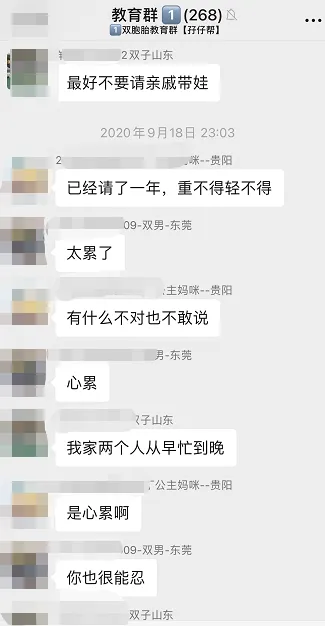
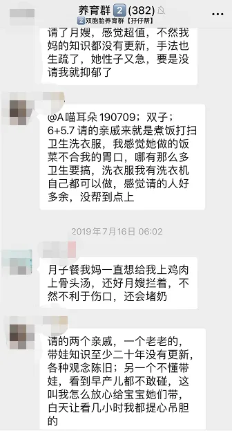
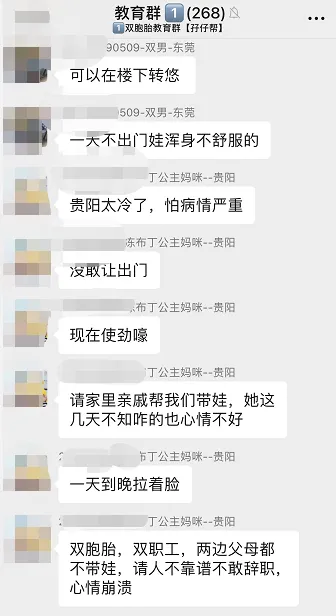
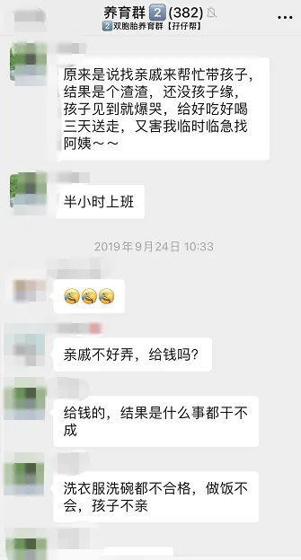

孖仔帮
公众号ID：twinsbang
关注
文|圆圈妈
网图|侵删
坚决否！
前几期推文《有人拼带双胞胎吗？我只带一小时，其他时间都是你的》有提到曾经与亲戚拼团带双胞胎，有宝妈私信问：找亲戚一起带双胞胎是什么体验？
因为此刻的她也正面临着双胞胎没人带的窘境，婆婆身体不好，亲妈一人搞不定俩娃，必须有其他人搭把手才行。
无独有偶，在我们的双胞胎社群里，有不少妈妈都有找亲戚一起带双胞胎的经历，瞧这吐槽，太真实了，不忍直视。
左右滑动查看更多>>>
为什么要找亲戚一起带娃？
说起为何要找亲戚带娃，可能绝多大多数人觉得可信，知根知底，家庭背景和身体状况基本都清楚，最重要的是，自家人嘛，总不可能会虐待孩子吧。
而我找亲戚一起带娃的初衷，信得过是其次，重要的是，情况特殊，急需有人人人人帮忙带娃。
我是新手妈妈，对养娃育儿之道一窍不通，偏偏来了一对双儿，没有三头六臂，没有帮手，简直寸步难行，除此之外还基于以下3个不得已的苦衷。
1，婆媳矛盾是个千年老梗，
刚开始还有婆婆帮忙带，后面鸡毛蒜皮的事情太烦了太累了，她想把俩娃拎回老家带；而我铁了心坚持，要带可以，必须在我们身边带，坚决不能让俩娃沦为留守儿童。
2，穷，限制了选择，
养育双胞胎的头一年，真的很烧钱，一天15--20片尿不湿，3天一罐奶粉，真巴不得一分钱掰成两半花；光是买奶粉尿不湿就足以让一个中产阶级的屌丝天天啃白馒头加咸菜，更别说请在深圳请一个保姆育儿嫂。
你晓得不？坐标深圳，一个初级的毫无经验的都要8000起步，人家一听是双胞胎，赶紧加价，有些即便是加价了还不愿意来带。
额滴个娘亲，这年头什么世道，请个合适的保姆比剩女嫁老公还难。
MD...赤裸裸的歧视！
3，心里还装着诗和远方
以前觉得上班辛苦没自由，有了娃之后，才发现天底下没有哪份工作比带双胞胎更辛苦，我一粗人，养颗仙人掌都会枯萎，带娃更不擅长，还是老实上班赚奶粉钱比较合适，内心还是渴望着等哪天事业有成了，早日实现财务自由。
再说了，队友一人养活全家，着实吃不消，如果我成了全职妈妈，家里就少了一个人赚钱，那场面可能不是天天啃白馒头那么简单。
幸好天无绝人之路，在这样的窘境下，亲妈的远房表妹给我抛来了救命稻草，我简直无法拒绝。
以前在老家县城读高中时，受过表姨的恩惠，知道她的为人善良，做事细心负责，而且又有亲妈一起搭把手，两人又是表姐妹，几乎不存在嫌隙隔膜的情况；表姨有帮女儿带过外孙，接受过新型育儿理念的熏陶，跟我们的育儿观应该不会相差太远。
这...简直是不二人选。
我就像掉下悬崖的张无忌遇到了火工头陀，坚信大师能传授我“神功”，不求当武林盟主，只求两只四角吞金兽有人带，我能安心上班去。
事实上，圆圈的确有人带了，没有饿着冻着摔着，可是日子久了，冒出很多小问题。
问题1，亲戚关系＞雇佣关系，我不能像雇主那样要求表姨按我的方式养娃。
表姨是长辈，又是我千恩万谢邀请来的，可谓是地处高位，很多事情，我几乎不敢有自己的想法，更不敢提出来，常常是小问题苦笑一下就过了，大问题也只能憋在心里，烂在肚里 ，只求天下太平。
表姨带过外孙，自有一套带娃经验，对我提出的一些喂养管教睡眠方面的建议，口头上说好，实际上无法接受，不能照做，偶尔还会在亲妈面前吐槽一番。
我心里无声地抗议着，带单胎和双胞胎怎么能一样嘛，我以为就我一人不好过，亲妈也叫苦不迭。
圆圆比较好带，吃奶快，睡觉也不折腾，圈圈吃奶慢，每次睡觉要哄很久，睡着了也不踏实，哼哼唧唧...
亲妈总是把容易带，特别乖的圆圆交给表姨带，独自应付特别闹腾的圈圈，就是生怕把表姨累坏了。
而我想要的暖人画面：俩娃一起互动，一起玩耍，一起交流...根本没有，都是各自带一个，躲在房间，尽量不接触，免得互相影响。
为了顾全大局，亲妈还经常拉我密聊，让我千万别吭声，睁一只眼闭一只眼就好，每次看我下班回家刚进门就大声嚷嚷：” 你的两个崽太难带了，一放下就醒，你姨抱娃抱了一整天了，赶紧去搭把手，让你姨歇会儿...
我马上心神领会，顾不得白天工作一身的劳累，赶紧把俩娃接过来抱，让表姨去休息。
看着满屋子的狼藉，俩娃脖子上脏兮兮的口水巾，被奶渣口水淹得通红的下巴...觉得心很累，想说点什么抗议一下，可是嘴里好像吃了黄连一样，有苦说不出。
这人要是花钱雇佣的保姆，我肯定有底气让其马上卷铺盖走人；要是婆婆，我还能委婉暗示一下，或者让圆圈爸出面提下建议；偏偏这人是亲戚，需顾及情分，使唤不得，明里暗里都说不出口。
终于明白亲妈的那句话：找亲戚带娃，只能管饱，其他要求不要想太多。
我以为身体累心累熬一熬就过去了，然而更伤脑筋的还在后头
问题2，报酬方面，我不能像雇主那样按正常的市场价给到其相应的薪水。
表姨回去的前晚，我揣着一沓钞票，好像捧着一颗原子弹惴惴不安，这钱够不够？多了还是少了？给多少合适？该怎么给？给的时候要说什么？怎样说才能不得罪人？
辛苦了个把月，接受报酬是肯定的，可能表面上会客气推脱下不要，但心里面是想拿的；给多了怕她以为我当她是外人，亵渎了她的一片好意，给少了又担心被人诟病，以后亲戚都没得做。
妈呀，我太愁了，这人情世故我不会做，太难了。
最后亲妈出场帮我善后了，目送表姨回家那一刻，内心百感交集：以后圆圈即便没人带，也不会再找亲戚来带了。
这事算完了吗？
然而并没有...
之后的逢年过节，亲妈都会连环call催我必须带上圆圈，送上好礼，登门拜访表姨一家。我知道于情于理，这人情往来是应该的，但每次都显得很刻意，好像我这辈子欠了她一样，我送多少礼，回多少红包都不能抵消。
圆圈当时才8个多月，对这位姨婆的印象不深刻，有时表姨会逗下圆圈：“姨婆以前还带过你们啊，这么快就忘记了哈。”
这真是....说者无意，听者有意。
我怎么可能忘记呢，那可是我最狼狈，最无助的时候啊，感激表姨的帮助，但是如果让我重新选择，我会豁出去，宁愿高价请一个有带双胎经验的育儿嫂也不会找亲戚来带娃了。
如果你心胸开阔，处世不惊，不计较不介意，且亲戚的可信度高，那试试也无妨；
如果你心思敏感，脸皮薄，内心脆弱但控制欲强，还有点小计较，那为了日后在亲戚面前的坦坦荡荡，还是算了吧。
不管你是否给亲戚钱，给了多少钱，最终都只有一个结局：所有人都会觉得是你占了亲戚的便宜，欠她一个人情。
反正直到现在，我心里依然有个梗，总觉得欠亲戚很多，不管逢年过节送多少礼都抹杀不了。
曾经，我最向往的生活就是按自己的方式，随心所欲地活着，包括养自己的娃，不受人诟病，不欠人恩情。
如果你也有我这般雄心壮志，那就咬咬牙，自己带吧！自己带不来，那就花钱请专业保姆带，付了工资就方便提要求和交代干活。
这年头，只要钱能解决的问题，通常都不是大问题。
有时候，养娃事小，简单，累是累，睡一觉就好，心里舒坦；若摊上点成年人的世界里那些事，有可能是一辈子的梗。
-END-
今日互动话题
#什么事情想不开，让你不得不找亲戚来带双胞胎#
评论区聊一聊呗！
微信公众号：孖仔帮
ID : twinsbang
专注双胞胎孕育，养育，教育经验分享
扫码关注我们
点一下你会更好看耶




